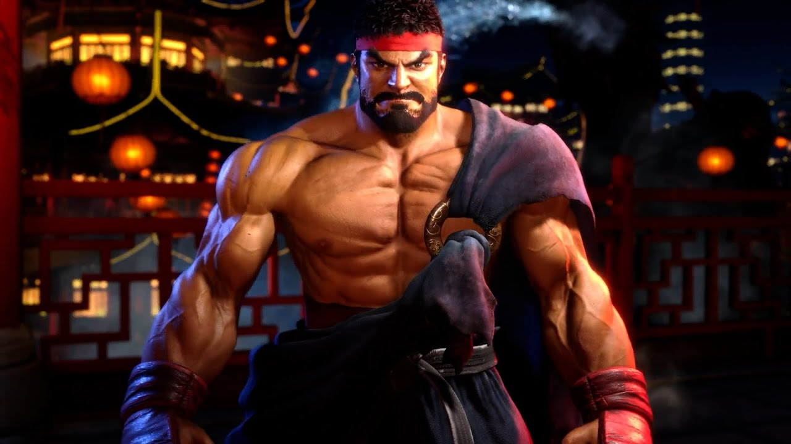
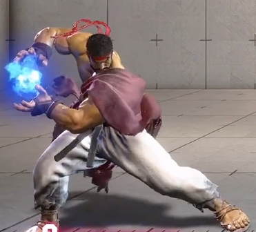
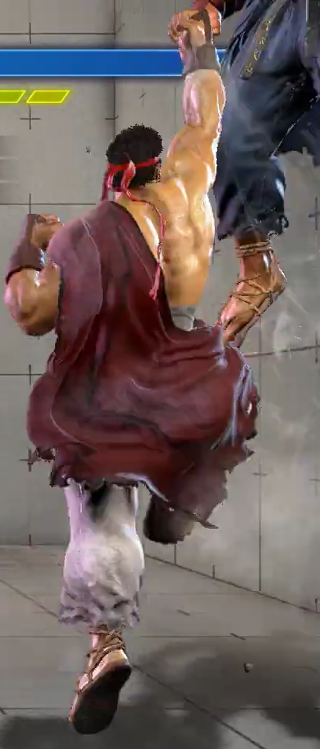
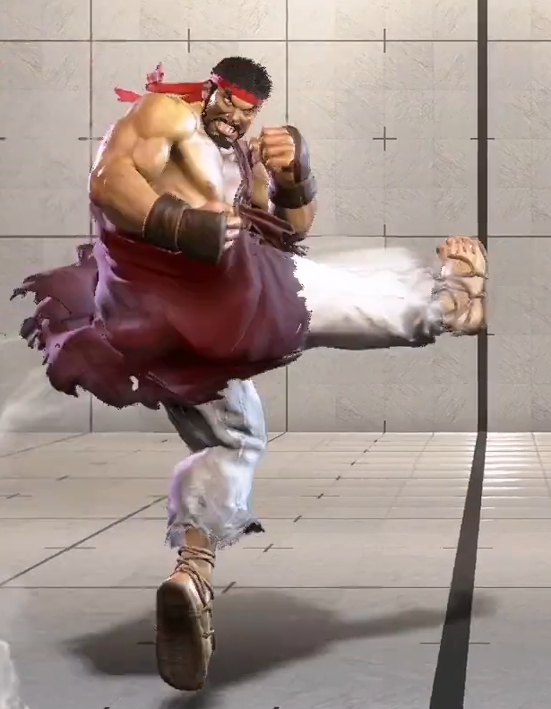
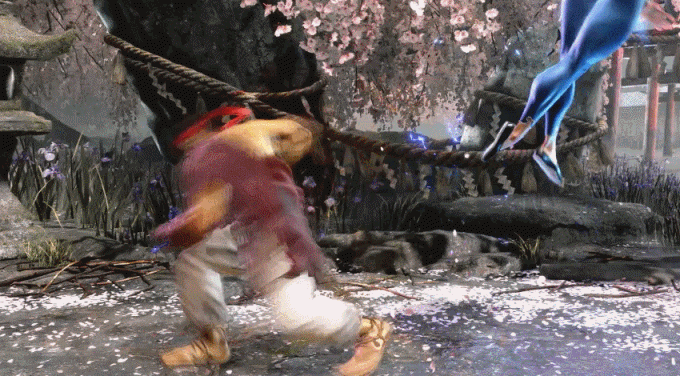

Fighting Honorably: Ryu and the Art of the Basic

Ryu is the main character (at least for most games) in the Street Fighter series and embodies the idea of what a "street fighter" is. Starting from the origins of the series where he was one of the only two playable characters, he has continued to appear in nearly all fighting games and even beyond. However, with each iteration, one would expect for there to be more change within his moveset. Over the years, Ryu has not changed much and only became more affirmed in his identity, even as gameplay changed. Ryu's base identity remains the same: a character emphasizing pure focus on the fundamentals of the game's combat.
In a medium obsessed with spectacle, Ryu is strange in how striaghtforward he is. He has retained his fireball, rising uppercut (Shoryuken), and tatsumaki. And yet he remains in each game as a statement of his design and then the player's intentions as well: to have an honest fight and learn.
| Move | Input | Role | Example |
|---|---|---|---|
| Hadouken (Fireball) | Quarter-circle forward + Punch | Controls space, forces the opponent to approach |  |
| Shoryuken (Uppercut) | Forward, Down, Down-Forward + Punch | Anti-air, invincible reversal, high risk/reward |  |
| Tatsumaki Senpukyaku (Hurricane Kick) | Quarter-circle back + Kick | Mobility, combo ender, punishes projectiles |  |
Starting with the Hadouken, almost all fighting games feature one projectile and his identifies and pure fighting energy. He has a clear tell in his pose when performing it alongside a blue glow. This way there is no misinterpreting it and there is no trick to its direction: it will move forward. Then, the shoryuken, the move that commits heavily to the uppercut, but also makes him able to defend himself from above. It's Ryu's most sudden and dangerous move, but relies entirely on knowing and being able to react to when the opponent jumps due to its limited range. Finally, the tatsumaki senpu-kyaku, a spinning kick that moves forward and lets him get closer, even if easily blocked. All of these moves combine to give him a movese that is able to do enough for any direction. Moving back to defend yourself, standing your ground, or even moving forward. None of which is an unexpected move or able to suddenly change the situation from afar.

That is not to say that these are the only moves that Ryu has had over the years, or else how would he have proved he's been training. The High Blade Kick only adds to his identity however as it is a high commital move that requires intense knowledge of spacing how far you are from the opponent, something that the moves above are meant for (even the shoryuken as it lets Ryu stand still through just the pressure of it coming out). There is a long charge time before it comes out, which leaves him open when up close. It takes a long time for him to get back into his neutral pose after it happens, leaving him open when it misses. It is a move that only gets better as you understand and are able to predict the opponent more rather than trick them.
While I did not cover all of Ryu's moves, I hope to have made it clear what separates Ryu from the other characters in Street Fighter and in fighting games in general, which is nothing. His fundamentals-focused moveset is something that can be very simple to learn to execute, but using the limited moves properly in battle is its own training exercise in knowing how to play.